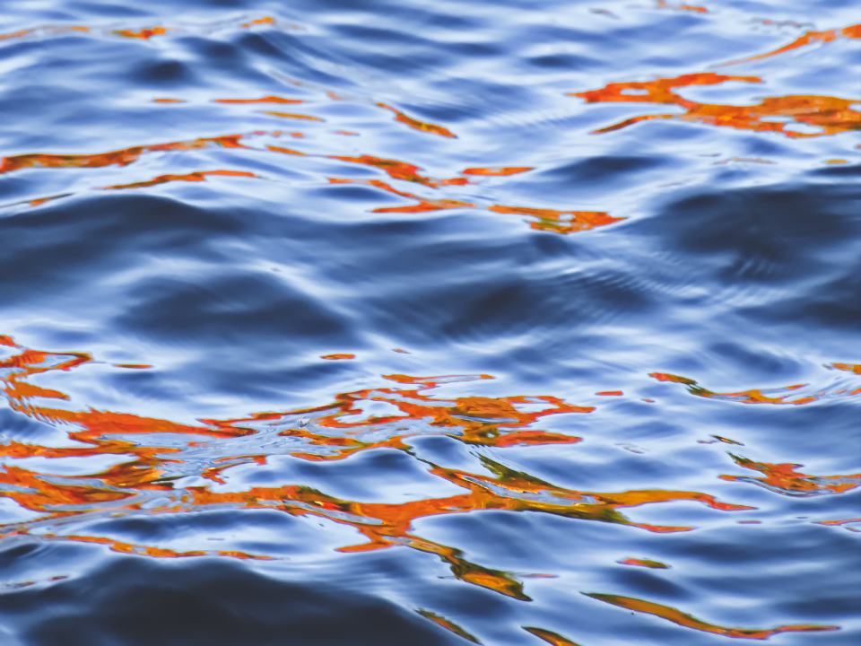
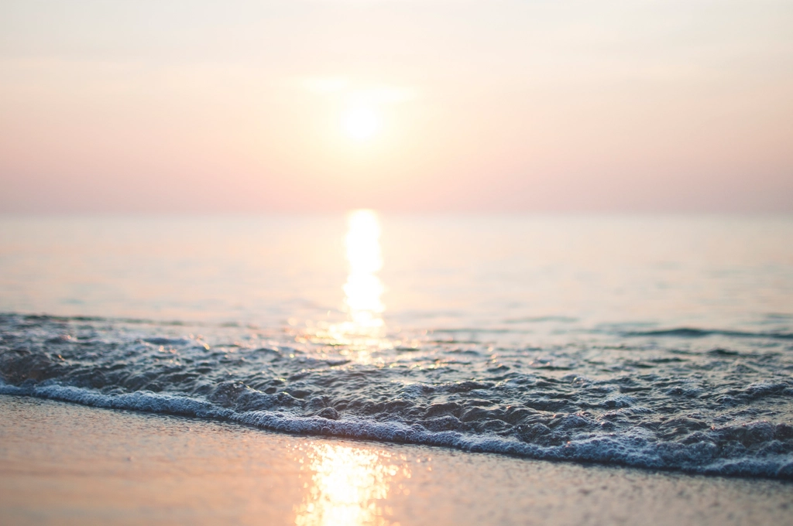
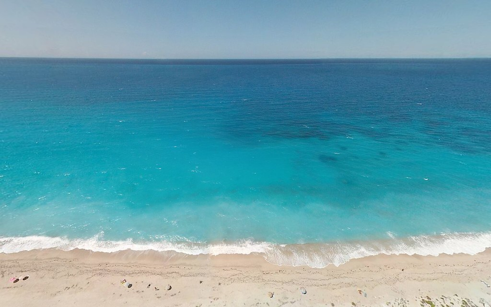
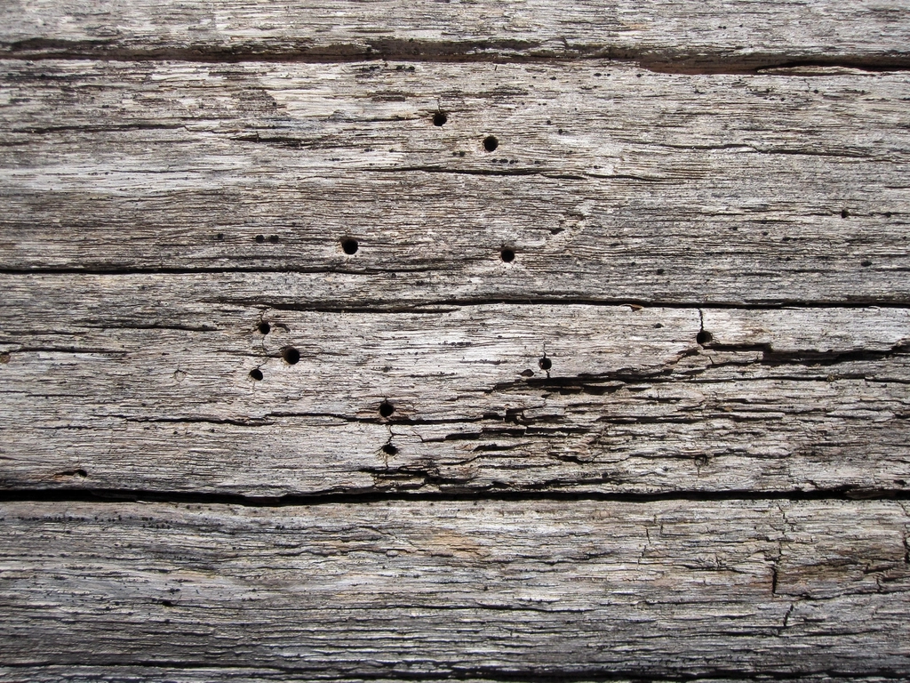

Uisce, Calm Waters ― 江ノ島・片瀬海岸
水のように、凪のように。
片瀬海岸の波音が届く「by the river」の2階。小さな凪(なぎ)のような時間を、髪とともに過ごしていただけたらと思っています。
Instagramで最新情報を見る

Our Concept
水のやわらかさと、凪の静けさ
店名「Uisce(イシュカ)」はゲール語で「水」を意味する言葉。江ノ島・片瀬海岸という海辺の立地、そして入居するビル「by the river」の名前にちなみ、水のやわらかさと、凪のような静けさを大切にした空間づくりを目指しています。
コンセプトを見る →Our Strength
片瀬海岸で過ごす、凪の時間

潮風が運ぶ、江ノ島の景色
江ノ島・片瀬海岸、海を感じるロケーション。日常のすぐそばに、海辺の空気を感じられる場所です。

凪のような、静かな時間
波のない穏やかな海面のように、心がほどけていく時間を過ごせる空間づくりを目指しています。

寄り添うカウンセリング
性別にとらわれない自然体のスタイル提案を基本に、一人ひとりの髪や好みに向き合うカウンセリングを大切にしています。
Voice ※イメージ例
お客様の声
イメージ例
お客様の声を見る →
「海を眺めながら過ごす、ゆったりとした時間が好きで通っています。」
※掲載の声はイメージ例(創作)です。実際のお客様の声ではありません。